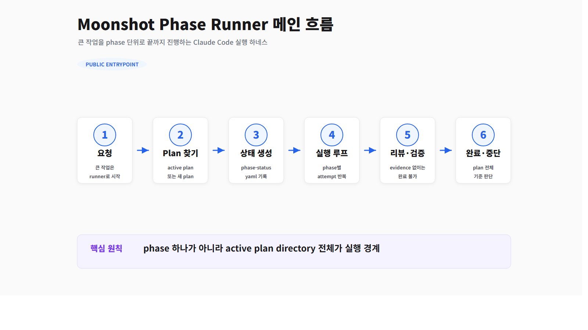
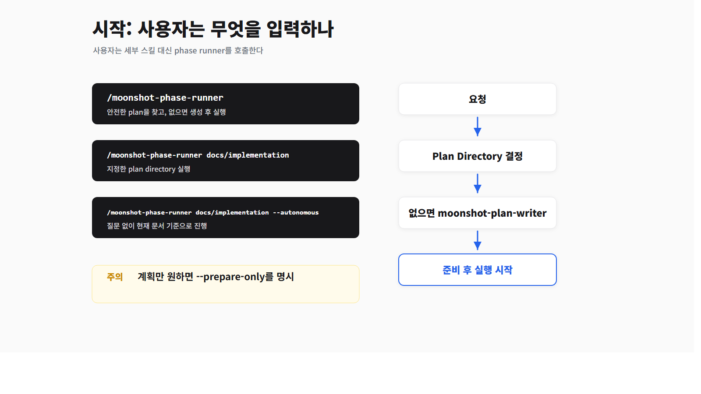
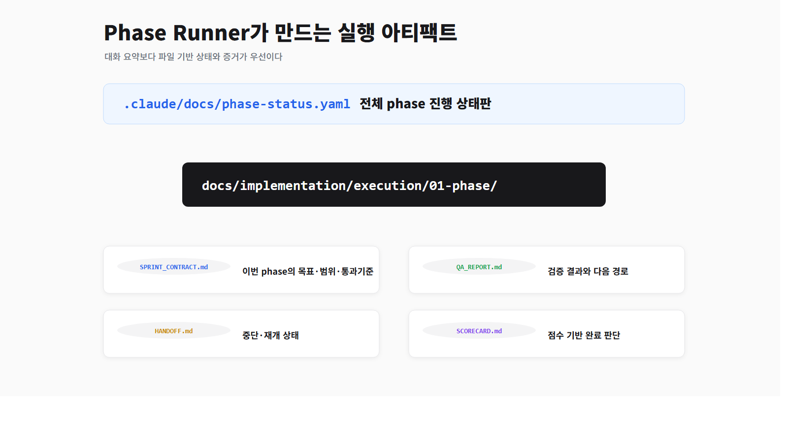
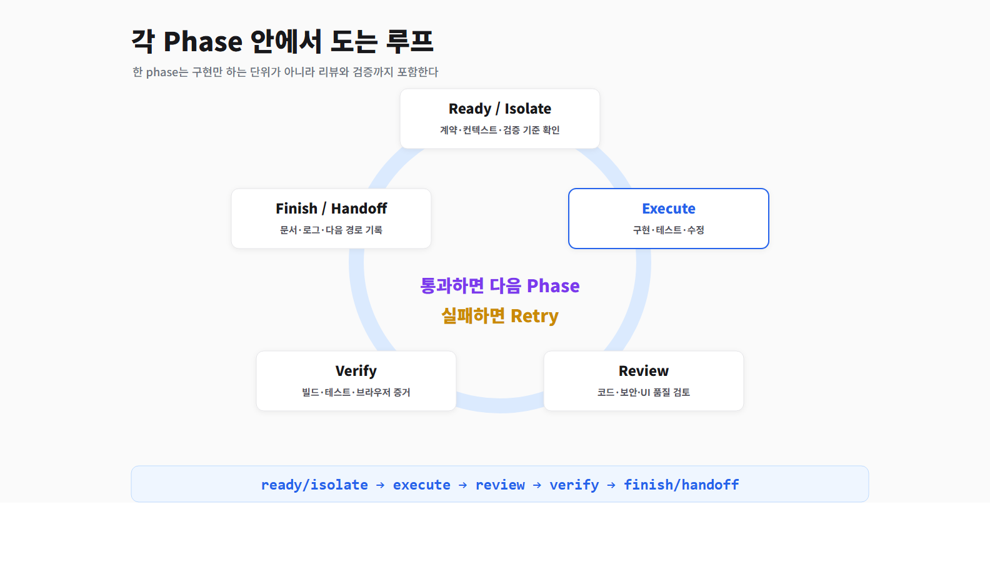
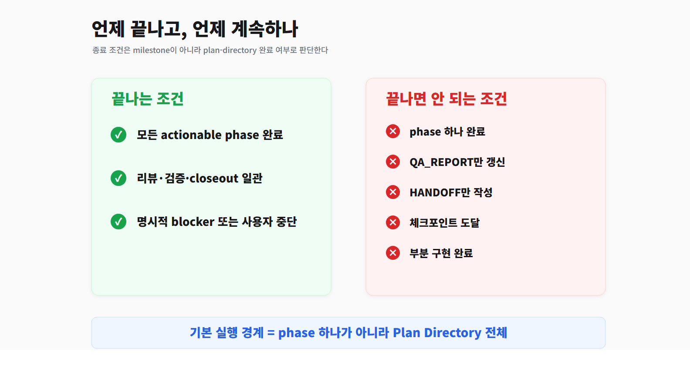
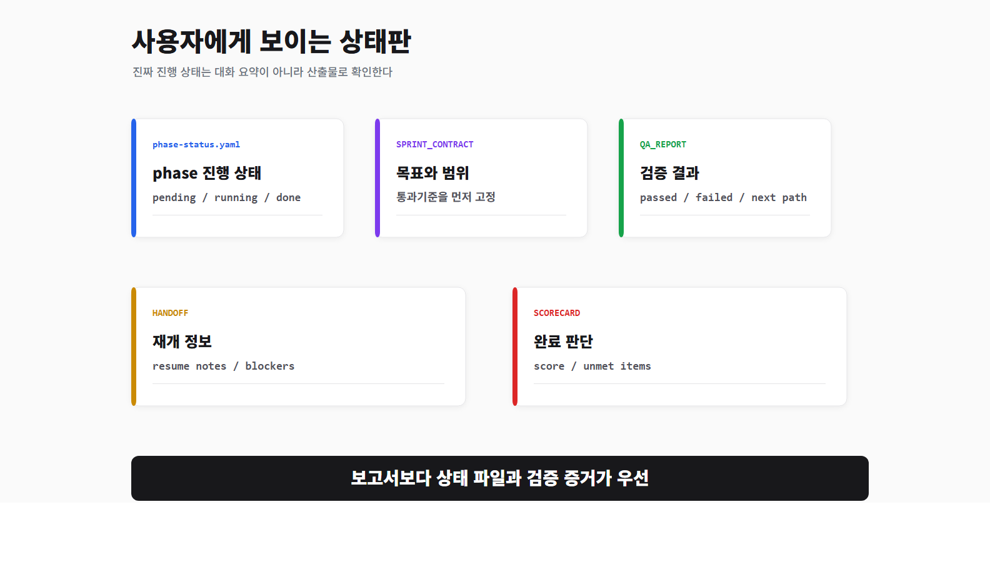

Moonshot Phase Runner 사용자 워크플로우
처음 보는 사람이 /moonshot-phase-runner를 실제로 언제, 어떻게 쓰고,
어떤 파일을 기준으로 진행 상태를 확인해야 하는지 설명하는 HTML 보고서입니다.
한 줄 정의
moonshot-phase-runner는 큰 작업을 여러 phase로 쪼개고,
각 phase를 계획, 실행, 리뷰, 검증, 기록까지 끝까지 밀어붙이는 장시간 작업 실행기다.
사용자는 매번 세부 스킬을 직접 고를 필요가 없습니다. 큰 작업이면
/moonshot-phase-runner로 시작하고, 내부 스킬과 스크립트 연결은 phase runner가 맡습니다.
언제 쓰나
아주 작은 오타 수정이나 단일 파일의 명확한 버그 수정은 phase runner까지 탈 필요가 없습니다.
사용자가 입력하는 명령
가장 일반적인 시작
/moonshot-phase-runner계획 디렉터리 지정
/moonshot-phase-runner docs/implementation질문 없이 자율 실행
/moonshot-phase-runner docs/implementation --autonomous준비만 하고 멈춤
/moonshot-phase-runner docs/implementation --prepare-only
기본 기대값은 --prepare-only가 아닙니다. 사용자가 “계속”, “진행”, “실행”이라고 말하면
준비 후 실행까지 들어갑니다.
전체 흐름
- Plan Directory 결정사용자가 지정한 디렉터리, 기존 active plan, 안전한 후보를 순서대로 확인합니다.
- Master Plan / Phase 문서 확인전체 목표와 phase 문서가 실제 실행 가능한지 확인합니다.
- phase-status.yaml 생성 또는 갱신전체 진행 상태와 attempt 정보를 상태판에 기록합니다.
- 실행 아티팩트 준비각 phase에 contract, QA, handoff, scorecard 파일을 준비합니다.
- 불확실성 처리와 실행 모드 결정질문이 필요한지, autonomous 처리할지, 어떤 실행 모드를 쓸지 정합니다.
- phase 실행 루프구현, 리뷰, 검증, 기록을 반복하고 남은 phase가 있으면 계속 진행합니다.
핵심은 phase 하나 끝났다고 반환하지 않는 것입니다. 활성 plan directory 안에 남은 phase가 있으면 다음 phase로 넘어갑니다.
Plan Directory 결정
| 우선순위 | 판단 기준 |
|---|---|
| 1 | 사용자가 넘긴 <plan-dir>를 사용합니다. |
| 2 | .claude/docs/phase-status.yaml의 기존 active plan을 재사용합니다. |
| 3 | docs/implementation에 유효한 master plan과 phase 문서가 있으면 재사용합니다. |
| 4 | 안전한 후보가 하나뿐이면 그 후보를 사용합니다. |
| 5 | 없으면 moonshot-plan-writer로 docs/implementation을 만듭니다. |
후보가 여러 개고 무엇을 써야 할지 명확하지 않으면 추측하지 않고 사용자에게 물어야 합니다.
상태와 실행 아티팩트
phase runner는 실행 상태를 .claude/docs/phase-status.yaml에 기록합니다.
사용자 관점에서 이 파일은 현재 어디까지 왔는지 보는 상태판입니다.
docs/implementation/execution/01-project-setup/
SPRINT_CONTRACT.md
QA_REPORT.md
HANDOFF.md
SCORECARD.md| 파일 | 역할 |
|---|---|
SPRINT_CONTRACT.md | 이번 phase에서 무엇을 할지, 무엇은 안 할지, 어떤 기준으로 통과할지 정의합니다. |
QA_REPORT.md | 검증 결과, 실패 조건, 다음 경로를 기록합니다. |
HANDOFF.md | 중단/재개를 위한 현재 상태와 다음 작업을 기록합니다. |
SCORECARD.md | 체크리스트와 점수 기반 완료 판단을 남깁니다. |
실행 모드 결정
delegated-terminal
기본에 가까운 장시간 자율 실행 모드입니다.
moonshot-phase-executor, dispatcher, agent-loop 경로를 탑니다.- “계속 진행해” 같은 요청에 가장 적합합니다.
- phase 하나 끝났다고 멈추지 않습니다.
in-session-coordinator
현재 대화 세션이 조율자 역할을 하는 모드입니다.
- 각 attempt는 격리된 실행 단위처럼 다뤄야 합니다.
- 메인 세션은 세부 구현 잡담을 들고 가지 않습니다.
- 중간 판단을 자주 확인하고 싶을 때 적합합니다.
Phase 내부 실행 순서
ready/isolate
-> execute
-> review
-> verify
-> finish/handoffready/isolate
실행 전 프로젝트 계약, context, 검증 계약, 격리 필요 여부를 확인합니다.
execute
실제 구현 단계입니다. 동작 변경이면 테스트 또는 재현 기준을 먼저 잡습니다.
review
구현자가 스스로 완료 선언하지 못하게 별도 리뷰 단계를 둡니다.
verify
typecheck, build, lint, browser flow 같은 fresh evidence를 만듭니다.
finish/handoff
clean_finish, retry, resume_later 중 하나로 기록합니다.
멈출 수 있는 조건과 멈추면 안 되는 조건
정상 종료
- active plan directory의 모든 actionable phase가 완료됨
- 리뷰, 검증, finish closeout이 모두 일관됨
종료 사유 아님
- phase 하나가 끝남
QA_REPORT.md만 갱신됨HANDOFF.md만 작성됨- 체크포인트에 도달함
사용자가 보는 주요 산출물
| 산출물 | 보면 알 수 있는 것 |
|---|---|
.claude/docs/phase-status.yaml | 전체 phase 진행 상태 |
<plan-dir>/00-master-plan-*.md | 전체 목표와 phase 구성 |
<plan-dir>/<phase>.md | phase별 작업 정의 |
SPRINT_CONTRACT.md | 이번 round의 계약 |
QA_REPORT.md | 검증 결과와 다음 경로 |
HANDOFF.md | 중단/재개 상태 |
SCORECARD.md | 완료 점수와 unmet item |
.claude/logs/agent-loop/ | delegated-terminal 실행 로그 |
좋은 요청 예시
/moonshot-phase-runner docs/implementation --autonomous
전체 phase 완료까지 계속 진행해. phase 하나 끝났다고 멈추지 말고,
blocker가 있으면 QA_REPORT와 HANDOFF에 이유를 남겨줘./moonshot-phase-runner
현재 저장소 상태를 보고 안전한 plan directory를 찾고,
없으면 docs/implementation을 만들어서 실행까지 이어가./moonshot-phase-runner docs/implementation --prepare-only
실행은 아직 하지 말고 phase-status와 execution artifact만 준비해줘.흔한 오해
계획만 만드는 도구인가?
아닙니다. 기본은 준비 후 실행까지입니다. 계획만 원하면 --prepare-only를 명시해야 합니다.
phase 하나 완료되면 final 보고하는가?
아닙니다. 기본 실행 경계는 plan directory 전체입니다.
QA_REPORT가 있으면 완료인가?
아닙니다. review, verify, finish closeout이 일관되어야 완료입니다.
executor를 직접 호출해야 하나?
보통 아닙니다. 사용자는 moonshot-phase-runner로 시작합니다.
시각 자료
같은 내용을 이미지 슬라이드로도 확인할 수 있습니다.





